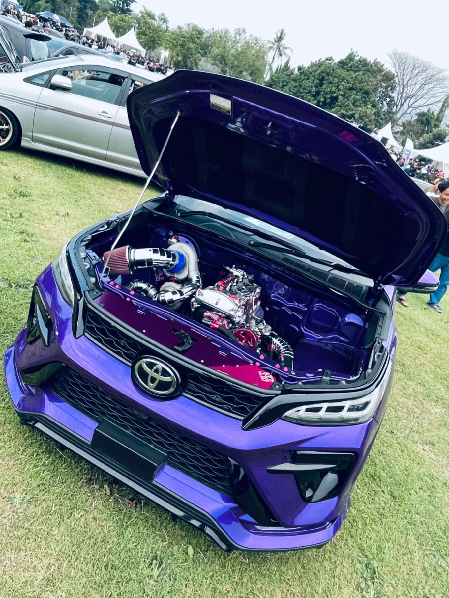
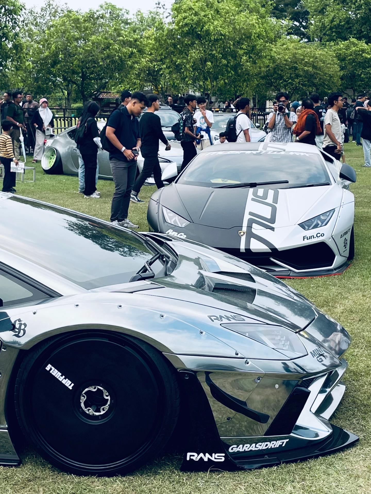

Architecture Student at Universitas Gadjah Mada | Observing, learning, and designing the future of Indonesian architecture.

An exploration of basic forms and spatial organization.
The application of computational and digital modeling in architectural design, utilizing a combination of 2D and 3D software.

An exploration of visual communication and architectural graphics to convey design ideas effectively and aesthetically.
I am an Architecture student at Universitas Gadjah Mada, passionate about how space, structure, and aesthetics shape daily life. I am currently focused on developing my design skills and am open to new experiences in the field of architecture.